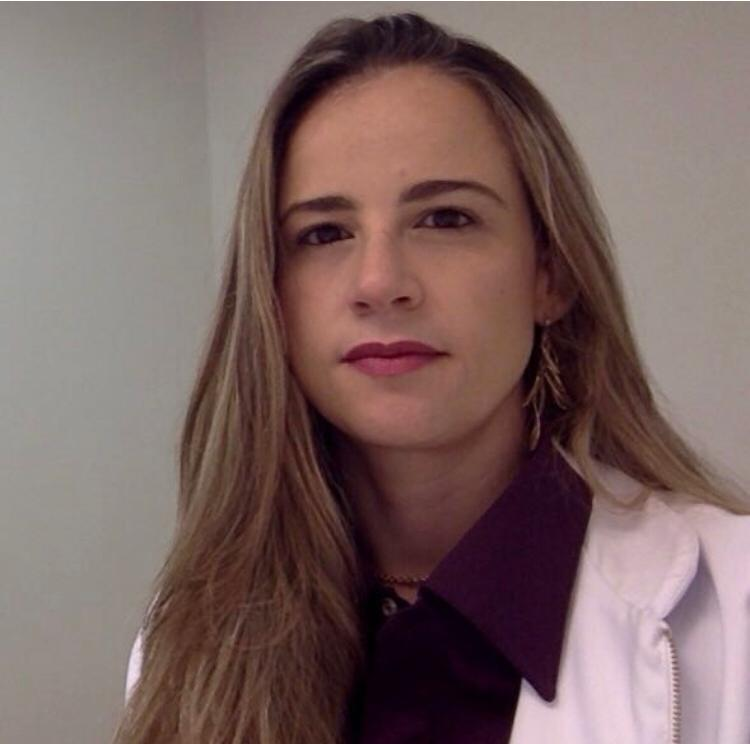

Cirurgiã Vascular e endovascular, graduada na Pontifícia Universidade Católica de Campinas e no Hospital Israelita Albert Einstein.
Trabalho na área de doenças crônicas vasculares e na flebologia, cuidando da sua circulação para ter uma melhor qualidade de vida.
Realizo ultrassonografia Doppler vascular e procedimentos de estética.
Esse blog tem a finalidade de informar ao paciente sobre doenças mais populares dentro da cirurgia vascular e dar dicas para uma melhor qualidade de vida.
Atendimentos na cidade de São Paulo e em Caraguatatuba. Entre em contato para saber o lugar mais próximo de você para atendimentos.